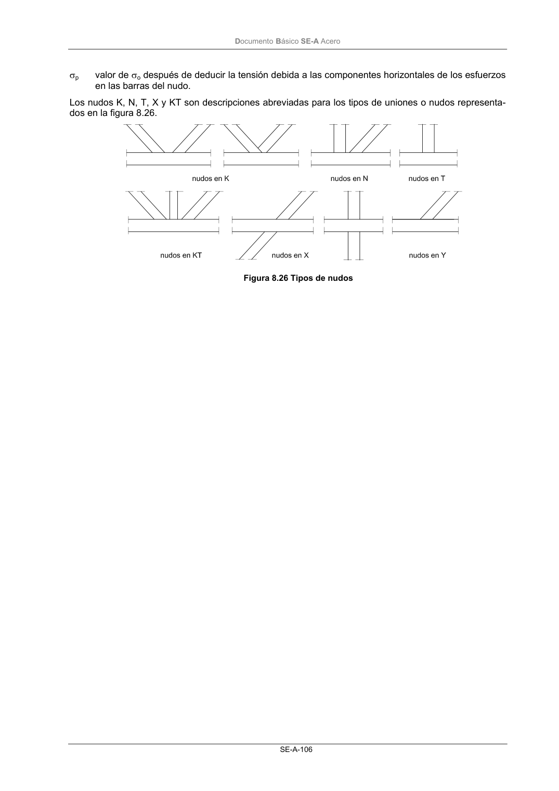

DB-SE-A · Página 108 · versión 2007-10-23
SHA256: 9ed9ea694aabfbda3bfbbef40dfe9223fde05d13c35bc2ba9751e5a96a22a64f · página física 108 de 168 · métodos de encabezado
solo si están cotejados.
Documento · ← p. 107 · p. 109 →
Formatos: Markdown · JSON de bloques · PDF p. 108 · imagen PNG
Documento Básico SE-A Acero SE-A-106 σp valor de σo después de deducir la tensión debida a las componentes horizontales de los esfuerzos en las barras del nudo. Los nudos K, N, T, X y KT son descripciones abreviadas para los tipos de uniones o nudos representa- dos en la figura 8.26. Figura 8.26 Tipos de nudos
